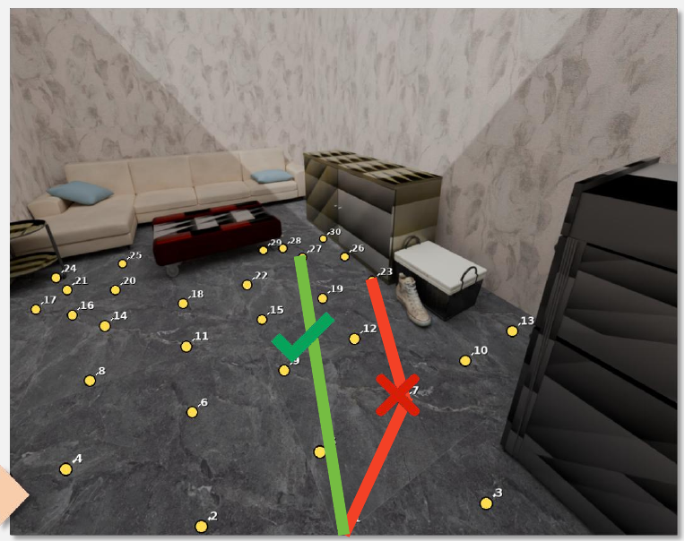
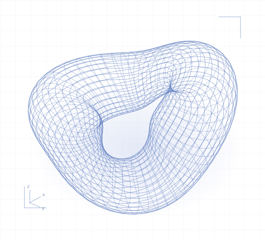
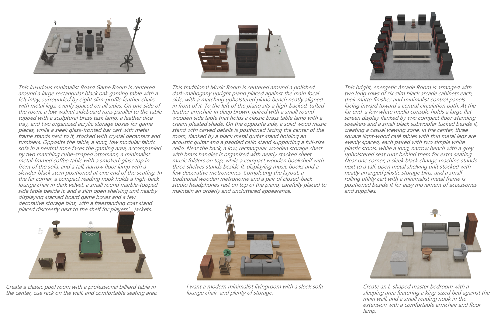

EGOPATHBENCH
EgoPathBench: Evaluating Zero-Shot Egocentric Waypoint Decision-Making in Vision-Language Models
从第一视角图像出发，评估视觉语言模型的路径点决策能力，连接目标识别、空间推理与具身约束下的路径规划。
你好，欢迎来到我的学术主页
上海交通大学 · 直博四年级
我的研究关注空间智能、三维场景生成与具身导航，探索视觉语言模型如何理解三维世界、进行空间推理，并作出可靠的决策。

01 / SELECTED RESEARCH
关于空间、理解与行动的探索。

从第一视角图像出发，评估视觉语言模型的路径点决策能力，连接目标识别、空间推理与具身约束下的路径规划。

让模型在生成中观察、反思与修正。通过视觉反馈和多轮强化学习，逐步构建空间布局合理的三维室内场景。
02 / THE JOURNEY
在学术探索与实践中，
拓展研究的边界。
直博 · 四年级
Microsoft Research Asia · MSRA
AGIBOT
03 / GET IN TOUCH
欢迎交流研究想法，或探讨潜在的合作。